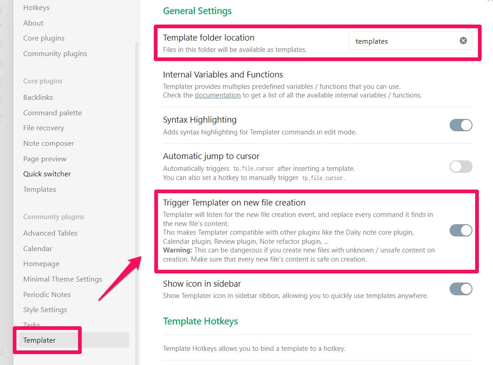
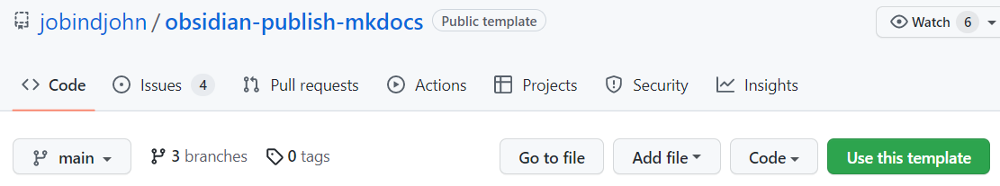
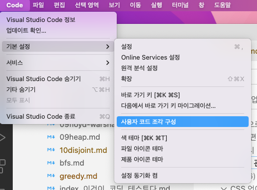

👀
Home
읽은 책
지식관리
개발환경
오답노트
시각화
프로젝트
블로그
Contact
지식 관리
Material for MkDocs
$ mkdir 폴더이름
: 사이트로 구성할 폴더 만들기
Oct 12, 2022

Obsidian template 사용

Obsidian to github pages
obsidian-publish-mkdocs 에서 초록색 ‘Use this template’ 버튼 눌러 깃허브 페이지로 사용할 레포지토리 생성(복사할 때는 main 브랜치만 복사한다.)
Oct 6, 2022
VI Vundle
Vundle 홈페이지
Oct 17, 2022

VS Code에서 snippets 만들기
공식 설명서(영문){target:_blank}
Oct 23, 2022
ananconda settings in window
C: C: C:
Oct 26, 2022
git
Oct 30, 2022
gitignore가 적용 안 될 때
문제 상황:
.gitignore
파일에 기록했는데도 Untracted files로 보이는 경우
Oct 9, 2022
mkdocs에서 링크된 문서를 새 창으로 열기
mkdocs로 만든 웹사이트에서 링크를 클릭하면 현재 창에 연결된 문서가 뜬다. 가끔 불편한 점은 외부 문서나 주피터 노트북을 변환한 html 파일을 링크하면 내 홈페이지를 벗어나 버려 돌아오기가 번거롭다. 일부 링크는 새 창으로 띄우면 더 편리할 것 같아 찾아보았다.
Oct 23, 2022
quarto
공식 문서
Oct 26, 2022
vscode extension
설정 방법:
Oct 12, 2022
리눅스 PATH
Oct 6, 2022
No matching items